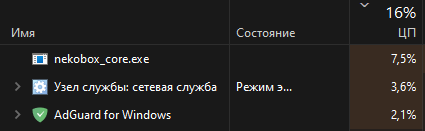
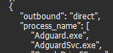

При одновременном использовании NekoRay (режим TUN, VLESS), и AdGuard начинает страдать процессор. Вот они слева направо:

Один из процессов может начать жрать и 20%. Если отключить AdGuard или NekoBox, то потребление снижается до 0-1%.
Для фикса пробовал такое:
{kind=link}
И такое:

Не помогает.
NekoRay еще в логи спамит, и ему вообще пофиг, есть правила для роутинга процесса AdGuard, или нет:
Спойлер
INFO[0019] [543243331 11ms] router: found process path: C:\Program Files\AdGuard\AdguardSvc.exe INFO[0019] [543243331 11ms] outbound/direct[direct]: outbound packet connection INFO[0019] [4189587400 13ms] router: found process path: C:\Program Files\AdGuard\AdguardSvc.exe INFO[0019] [4189587400 13ms] outbound/direct[direct]: outbound packet connection INFO[0019] [1717965780 12ms] router: found process path: C:\Program Files\AdGuard\AdguardSvc.exe INFO[0019] [1717965780 12ms] outbound/direct[direct]: outbound packet connection INFO[0019] [3806706700 12ms] router: found process path: C:\Program Files\AdGuard\AdguardSvc.exe INFO[0019] [3806706700 12ms] outbound/direct[direct]: outbound packet connection
Как можно это исправить? Чтоб одновременно работали, и не жрали столько ресурсов.
upd: при разворачивании “сетевая служба” в диспетчере, показывает “DNS клиент”. Наверное DNS не могут поделить, или типа того. Отключил DNS-защиту в AdGuard, вроде пока нормальное потребление. Но хотелось бы использовать dns защиту в Адгуарде  .
.
upd2: дело точно в dns, настройках роутинга, и подобном. Попереключал разные настройки, все вроде стало работать. Решил понять, что конкретно нужно было переключить, начал снова перебирать настройки роутинга, и в итоге нагрузка на ЦП вообще идет под 100%, всё виснет, я хз вообще.
А вы по дефолту получается пускаете весь трафик через TUN и только Адгард не хотите?
Например при настройках как у вас (проксируется весь трафик, кроме 2х экзешников и того что в simple route) тот же включенный торрент будет нагружать проц так же
Пробовали наоборот настроить в Preferences>routing settings>default outbound bypass, а в настройках тун включить вайтлист?
А вы по дефолту получается пускаете весь трафик через TUN и только Адгард не хотите?
Все через ВПН, кроме российских сайтов и торрентов. Ну еще кроме WSL, VS Code, Docker, Steam, и подобное, но это уже как получится. При этом должен работать AdGuard с их DNS. В такой конфигурации все очень быстро работает в плане скорости интернета (не считая жрущего процессора).
В общем, сегодня удалил nekoray на всякий, скачал nekoray beta-4, отключил dns routing (хотя разницы между включением/отключением dns routing вроде и нет), выбрал сервер, включил tun. Работает нормально, ресурсы не жрет. Но если в simple route добавить хоть какие-то элементарные правила типа:
{
"rules": [
{
"domain_suffix": [
".ru",
".su",
".xn--p1ai"
],
"outbound": "direct"
},
{
"geoip": [
"private",
"ru"
],
"outbound": "direct"
}
]
}
то начинается сущий кошмар, процессор грузит, в логи спамит
INFO[0008] [3517323876 0ms] inbound/tun[tun-in]: inbound packet connection from 172.19.0.1:60621
INFO[0008] [3517323876 0ms] inbound/tun[tun-in]: inbound packet connection to 172.19.0.2:53
INFO[0008] [3517323876 0ms] outbound/direct[direct]: outbound packet connection
INFO[0008] [4261053470 0ms] inbound/tun[tun-in]: inbound packet connection from 172.19.0.1:60626
INFO[0008] [4261053470 0ms] inbound/tun[tun-in]: inbound packet connection to 172.19.0.2:53
INFO[0008] [4261053470 0ms] outbound/direct[direct]: outbound packet connection
INFO[0008] [1091316985 0ms] inbound/tun[tun-in]: inbound packet connection from 172.19.0.1:60629
INFO[0008] [1091316985 0ms] inbound/tun[tun-in]: inbound packet connection to 172.19.0.2:53
INFO[0008] [1091316985 0ms] outbound/direct[direct]: outbound packet connection
INFO[0008] [3722262886 0ms] inbound/tun[tun-in]: inbound packet connection from 172.19.0.1:60633
INFO[0008] [3722262886 0ms] inbound/tun[tun-in]: inbound packet connection to 172.19.0.2:53
Видимо правила роутинга вообще не переваривает.
Ну в логах это видимо локальный айпишник, может Докера, или еще чего. Не знаю что добавить в исключения, а то щас как добавлю, и опять весь пк зависать начнет.
Вместо nekoray можно использовать v2rayN с правилами:
Domain (direct)
regexp:\.ru$,
regexp:\.su$,
regexp:\.xn--p1ai$
IP (direct)
geoip:ru
Роутинг тут всё переваривает, это IP вашего TUN, INFO в заголовке явно говорит, что это не ошибка 
Нагрузка процесса, вероятна вызвана зацикливанием DNS Запросов, отключите в AdGuard “DNS Защита”
Спасибо. Ну я уже просто sing-box использую, как-то настроил, и работает.
можете попробовать использовать форк nekoray, работает наиболее стабильнее